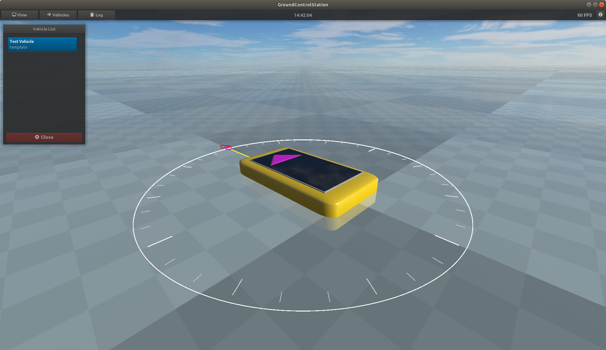

Vehicles
The upper toolbar contains the button to open the Vehicles menu. The Vehicles menu contains a list of vehicles
that have been found since GCS was started.
The GCS builds up a vehicle database internally at runtime. As soon as vehicles are in the database, these
vehicles appear in the list as blue buttons. The following figure shows that a vehicle with the name "Test Vehicle"
and the optional vehicle description "template". Clicking this button opens a window with vehicle-specific
data and settings. The optional vehicle description corresponds to the description
field of the Info Response Message (Inter-Module Protcol). If a vehicle is added, the subfolder "vehicle" is searched
for a
ply file with the name of the vehicle description (in this case "template.ply").
